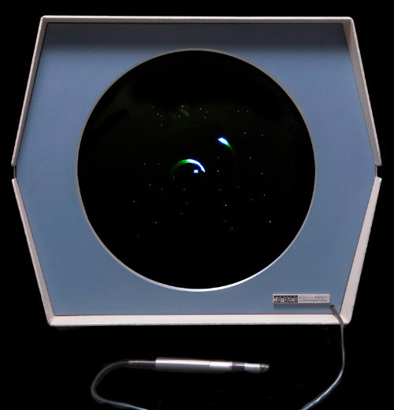

Gameplay Guide
Everything you need to master Spacewar! — from basic controls to advanced gravity slingshots and hyperspace mind games.
Game Objective
Spacewar! is a two-player competitive space combat game. Each player controls a spaceship orbiting a central star. The goal is simple: destroy your opponent's ship by hitting it with torpedoes, while avoiding being hit yourself, crashing into the central star, or falling victim to a hyperspace mishap.
The game has no score limit, time limit, or rounds — players duel continuously, with destroyed ships respawning to continue the fight. The true objective is bragging rights among your fellow hackers.
=== SPACEWAR! — COMBAT RULES ===
1. Two ships duel around a central star
2. Destroy opponent with torpedoes
3. Star gravity affects all ships
4. Collision with star = destruction
5. Hyperspace = random teleport + risk
6. Torpedoes have limited fuel
7. No friction — inertia is real
=================================
$

Controls
The original Spacewar! was played with custom control boxes connected to the PDP-1. Each player had a box with four controls. Modern emulators and remakes typically map these to keyboard keys.
△ Player 1 — The Needle
| Action | Original Control | Emulator Key |
|---|---|---|
| Rotate Left | Toggle switch L | A or ← |
| Rotate Right | Toggle switch R | D or → |
| Thrust | Button 1 | W or ↑ |
| Fire Torpedo | Button 2 | Space or F |
| Hyperspace | Button 3 | S or ↓ |
◆ Player 2 — The Wedge
| Action | Original Control | Emulator Key |
|---|---|---|
| Rotate Left | Toggle switch L | J or Keypad 4 |
| Rotate Right | Toggle switch R | L or Keypad 6 |
| Thrust | Button 1 | I or Keypad 8 |
| Fire Torpedo | Button 2 | K or Keypad 0 |
| Hyperspace | Button 3 | U or Keypad 2 |
💡 Control Tip
On the original PDP-1, rotation was controlled by toggle switches that stayed in position — you flipped left to rotate continuously, and flipped back to center to stop. Modern emulators use momentary keys, so you'll need to tap or hold to achieve the same effect. This takes some getting used to!
The Two Ships
Spacewar! features two distinct player ships, each rendered as a vector graphic on the CRT. While they handle identically in terms of thrust, rotation, and torpedo speed, their different shapes create meaningful visual and tactical differences.
△ The Needle (Player 1)
Slim Profile Harder to Hit
The Needle is a long, slender spacecraft with a pointed nose and two tail fins. Its thin profile makes it a smaller target for incoming torpedoes, especially when viewed head-on or from behind. Experienced players often prefer the Needle for defensive play.
- Visual: Slim, needle-shaped with pointed nose
- Hitbox: Narrow — harder to hit from front/back
- Playstyle: Defensive, precision-oriented
- Weakness: Can be harder to see during fast maneuvers
◆ The Wedge (Player 2)
Wide Profile Easier to Track
The Wedge is a broad, triangular spacecraft with a wide body. While it presents a larger target, many players find the Wedge easier to track visually during high-speed orbital combat. Its distinctive shape also makes it easier to judge orientation at a glance.
- Visual: Wide triangular wedge shape
- Hitbox: Broader — easier to hit from the side
- Playstyle: Aggressive, visual tracking
- Weakness: Larger target profile
Core Mechanics
🌠 The Gravity Well
At the center of the screen sits a star that exerts a real gravitational pull on both ships. This is not decorative — it is the single most important mechanic in the game. The star's gravity:
- Pulls both ships toward the center of the screen
- Is stronger closer to the star (inverse square law)
- Creates curved orbital trajectories — ships naturally fall into ellipses
- Destroys any ship that collides with it (flies into the center)
Mastering gravity is the difference between a novice and an expert. Top players use gravity slingshots — diving toward the star to gain speed, then curving around it to launch at high velocity toward their opponent.
⚡ Inertia & Momentum
Spacewar! simulates Newtonian physics: there is no friction in space. When you thrust, you accelerate in the direction your ship is facing. When you stop thrusting, you continue drifting at your current velocity indefinitely (until gravity or a collision changes it).
This means you cannot simply point at your opponent and hold thrust — you'll overshoot. You need to plan your trajectory, thrust in short bursts, and use counter-thrust to slow down or change direction.
💣 Torpedo Combat
Each ship can fire photon torpedoes — small glowing dots that travel in straight lines from the nose of the ship. Key torpedo mechanics:
- Straight-line travel: Torpedoes are NOT affected by gravity — they travel in a straight line at constant speed
- Limited fuel: Each ship has a limited number of torpedoes. Fire wisely
- Finite lifetime: Torpedoes eventually fade from the screen after traveling a certain distance
- No friendly fire: Your own torpedoes cannot destroy you
- Instant destruction: A single torpedo hit destroys the target ship
Because torpedoes travel straight but ships move in curved gravity wells, leading your target is essential. You must aim where your opponent will be, not where they are.
🔮 Hyperspace Jump
When cornered, outmaneuvered, or about to collide with the star, players can activate hyperspace to teleport to a random location on the screen. This is a high-risk, high-reward mechanic:
- Random teleport: Your ship reappears at a random position and orientation
- Explosion risk: Each hyperspace jump carries a probability of exploding on re-entry (approximately 25% in most versions)
- No control during jump: You cannot steer or fire while in hyperspace
- Limited uses: Some versions limit the number of hyperspace jumps per ship
⚠ Hyperspace Warning
Hyperspace is a gamble, not an escape button. You might teleport to safety — or you might explode, reappear inside the star, or materialize directly in front of your opponent's torpedoes. Use it only when the alternative is certain destruction.
Advanced Tactics
🌠 Gravity Slingshot
Dive toward the star at high speed, let gravity curve your trajectory, and emerge at maximum velocity. Use this speed boost to chase down opponents or make rapid direction changes that defy simple prediction.
🎯 Orbital Ambush
Establish a stable orbit around the star and wait for your opponent to approach. From orbit, you can fire torpedoes tangentially — your orbital velocity adds to the torpedo speed, creating faster-than-normal shots.
💣 Torpedo Spread
Instead of firing single shots, fire a spread of 3-5 torpedoes in slightly different directions as you rotate. This creates a wall of projectiles that's much harder to dodge, especially in the confined space near the star.
🔮 Hyperspace Mind Games
Use hyperspace not just to escape, but to reposition aggressively. If your opponent is chasing you, a well-timed jump can put you behind them — but only if you survive the re-entry roll. Fake a hyperspace attempt to make your opponent overcommit.
⚡ Thrust Budgeting
Thrust in short, controlled bursts rather than holding it down. Continuous thrust wastes fuel and makes your trajectory predictable. Master the "pulse and glide" rhythm — thrust to set up a trajectory, then glide while you aim and fire.
🎯 Star Trap
Position yourself between your opponent and the star, forcing them to either fly into the star's gravity well or take a long, predictable detour. If they dive toward the star, fire torpedoes along their escape trajectory — they'll have nowhere to go.
Common Beginner Mistakes
- Holding thrust continuously — You'll accelerate out of control and crash. Use short bursts.
- Ignoring gravity — The star will pull you in if you don't account for it. Always think about your orbital trajectory.
- Firing directly at the opponent — They're moving. Lead your target based on their velocity and direction.
- Overusing hyperspace — The explosion risk adds up. Save it for true emergencies.
- Forgetting inertia — When you rotate, your velocity doesn't change direction with you. You'll keep drifting in your old direction until you counter-thrust.
- Chasing the opponent — Don't just follow them around the screen. Use gravity to cut them off and set up ambushes.
Ready to put these tactics into practice?